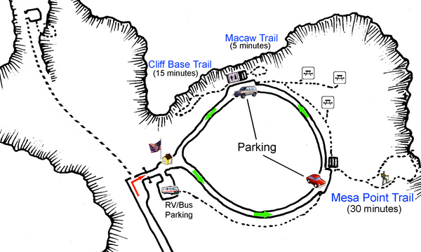
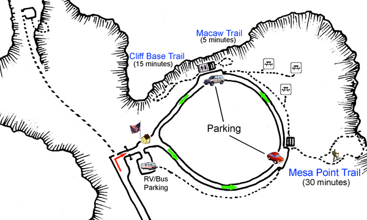

Hike New Mexico
w/ Tom & Ken
Boca Negra: Cliff Base Trail
| Difficulty | Round-trip | Type | Elev. Chg. | Exposure | Wow Factor | Facilities | Seasons | Flickr | By Car |
|---|---|---|---|---|---|---|---|---|---|
| Easy | 1 mile | Out-and-back | 20 ft | Full sun | Petroglyphs | Picnic Area | All | Album |  |


 

- Dec 20, 2015: A fierce-looking figure
- Dec 20, 2015: Multiple messages from different times?
- Dec 20, 2015: Could this be a supernova?
- Dec 20, 2015: One of many spirals found
- https://www.flickr.com/photos/139088815@N08/27651176212/in/album-72157669833765256
- https://www.flickr.com/photos/139088815@N08/27140920763/in/album-72157669833765256
- https://www.flickr.com/photos/139088815@N08/27473518560/in/album-72157669833765256
- https://www.flickr.com/photos/139088815@N08/27140892553/in/album-72157669833765256
The Cliff Base Trail is accessible from the same parking area as the Macaw Trail, just down from Mesa Point. It is of medium length and easy to hike although this one is not paved. There is very little elevation change involved in the roughly .2 mile path, but it does offer some nice specimens for the hiker. One of the sites that contains more information is the ProTrails website. Since all three Boca Negra hikes are very close together and easy to traverse, hiking the lot makes for an enjoyable and diverse experience.